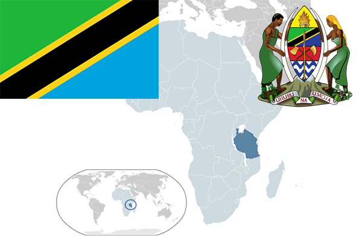

To`liq nomi: Tanzaniya Birlashgan Respublikasi
Region: Sharqiy Afrikada
Qonunchilik shakli: Respublika
Mustaqillik kuni: 26 aprel 1964-yil
Poytaxt: Dodoma
Maydoni: 945,087 km²
Chegaradosh davlatlari: Keniya, Uganda, Ruanda, Burundi, Kongo, Zambiya, Malavi, Mozambik
Aholisi: 48 261 942 (2013-yil)
Aholi zichligi: 41,1 /км²
Aholining o`rtacha yoshi: 65,60 yil
Rasmiy tili: Suhail va Ingliz tillari
Dini: 60% xristian, 32% islom, mahalliy dinlar
Pul birligi: Tanzaniya shilinggi
Telefon prefiksi: +255
Internet domen: .tz
Xalqaro tashkilotlarga a`zoligi: BMT
Dengiz va okeanlarga chiqishi: Hind okeani
YIM: Butun: $29,01 mlrd. (2013-yil)
Yirik shaharlari: Dorussalom, Zanjibar, Tanga, Mvanza, Arusha, Dodoma.